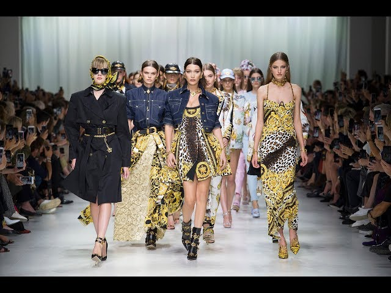
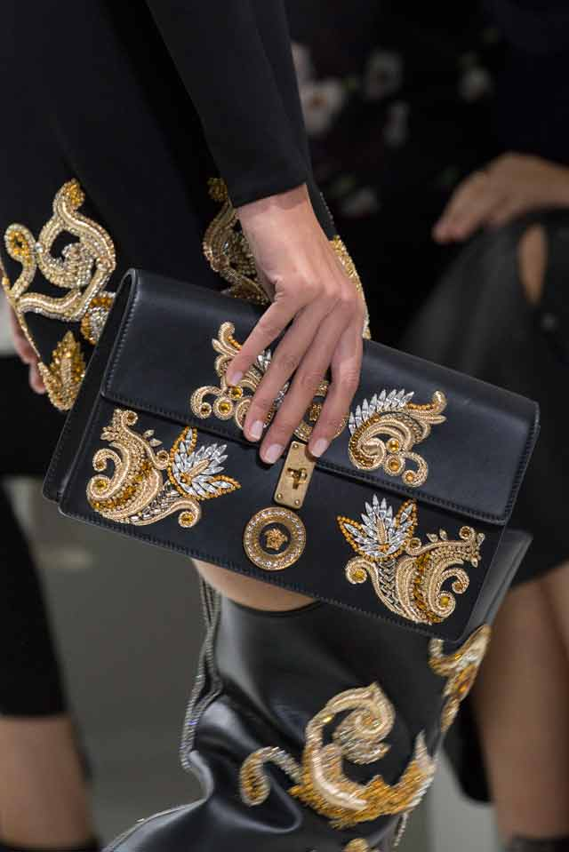
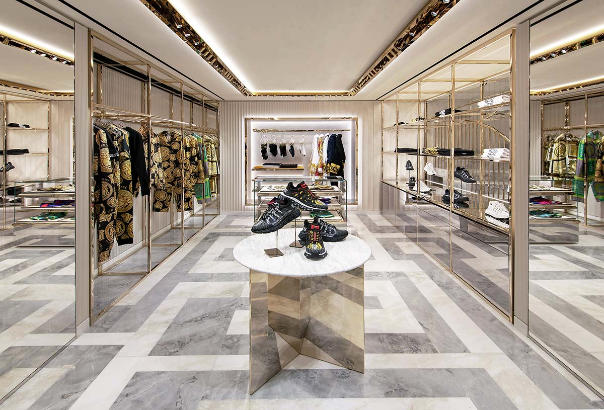
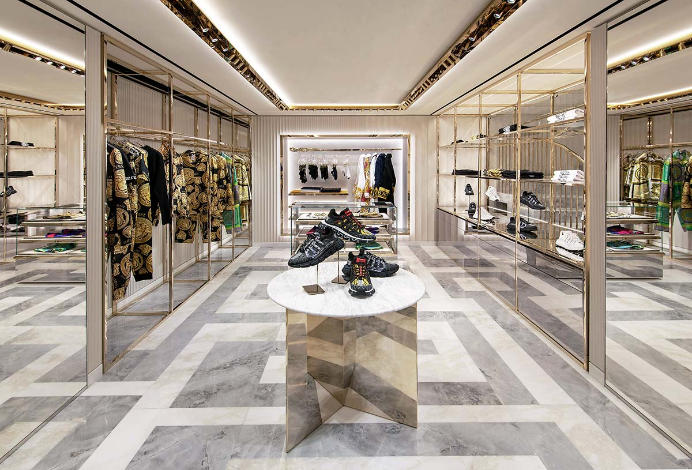
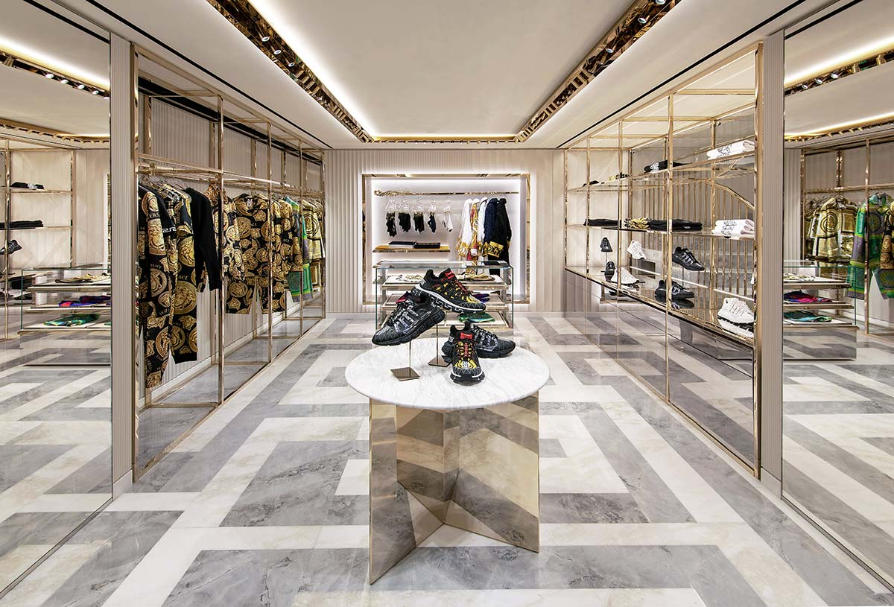

Founded by Gianni Versace in 1978, Versace quickly became a global symbol of high fashion. Known for its bold prints, vibrant colors, and sensual designs, the brand revolutionized the fashion industry with its daring, luxurious style.
The Story of Versace
Gianni Versace’s designs often featured classical influences, intricate baroque patterns, and high-end materials. His creations were frequently seen on red carpets and in the wardrobes of celebrities, establishing Versace as a dominant name in luxury fashion.
After Gianni Versace’s tragic passing in 1997, his sister Donatella Versace took over as creative director. She continued to honor her brother’s legacy while adding her own modern twist, continuing to push boundaries in fashion and maintaining the brand’s high prestige.
Gallery


 

